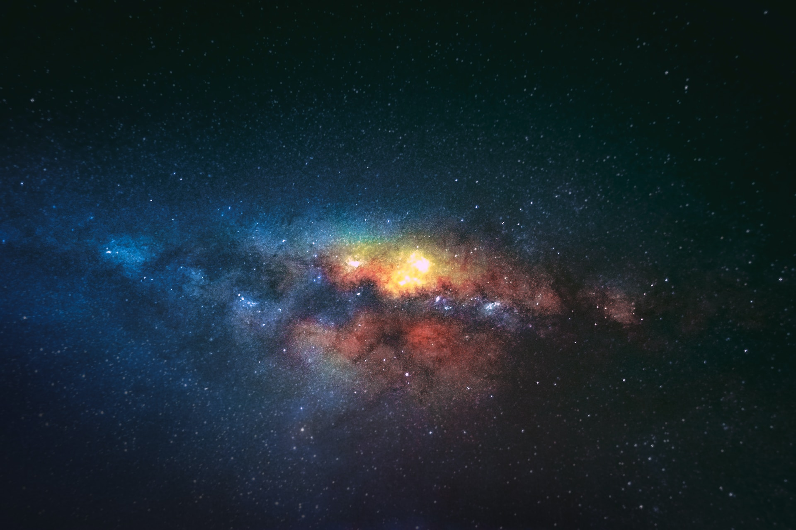

Uwais's Astronomy Hub
Galaxies
Galaxies are vast systems that consist of billions of stars, along with dust and gas, held together by gravitational attraction.
Planets

Planets are celestial bodies orbiting a star or stellar remnants. In our solar system, we have eight recognized planets.
Stars

Stars are massive celestial bodies made of hot gas that emit light and heat from nuclear fusion in their cores.
Interesting Facts
- The Milky Way galaxy is 105,700 light-years wide.
- There could be 100 billion galaxies in the Universe.
- The first human made object to break out of the Earth’s orbit was Luna 1 in January 1959.